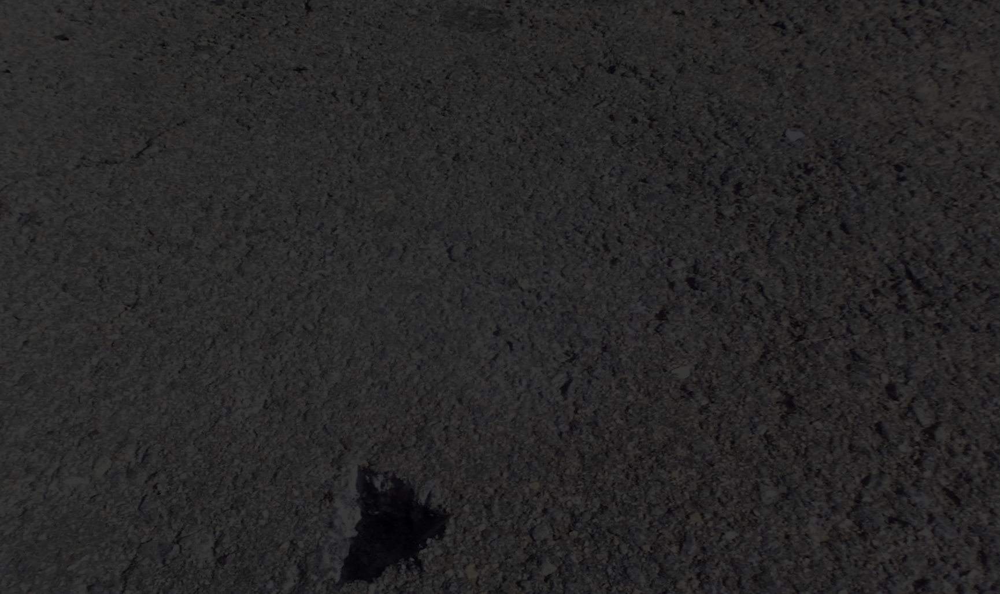
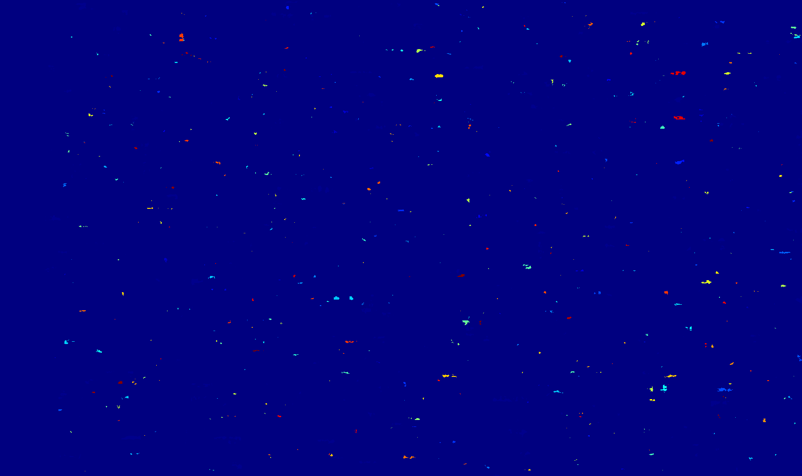
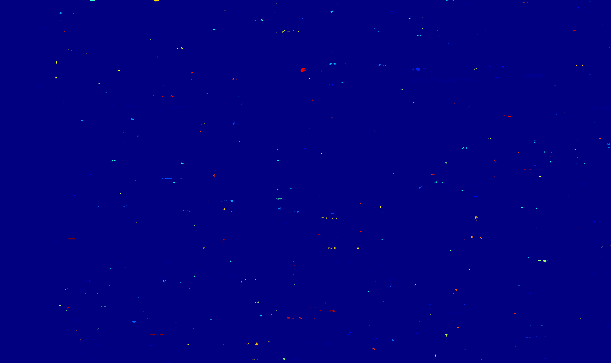
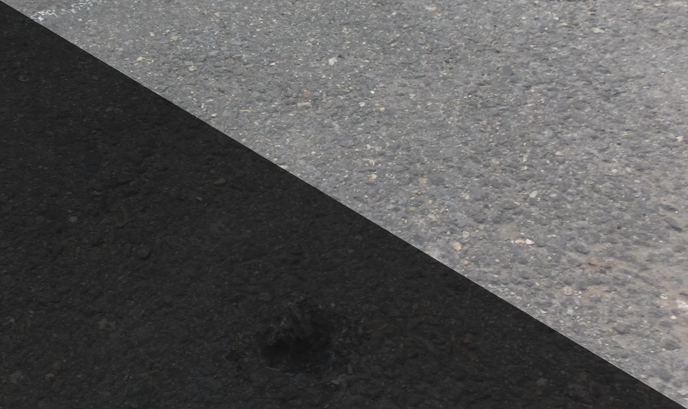
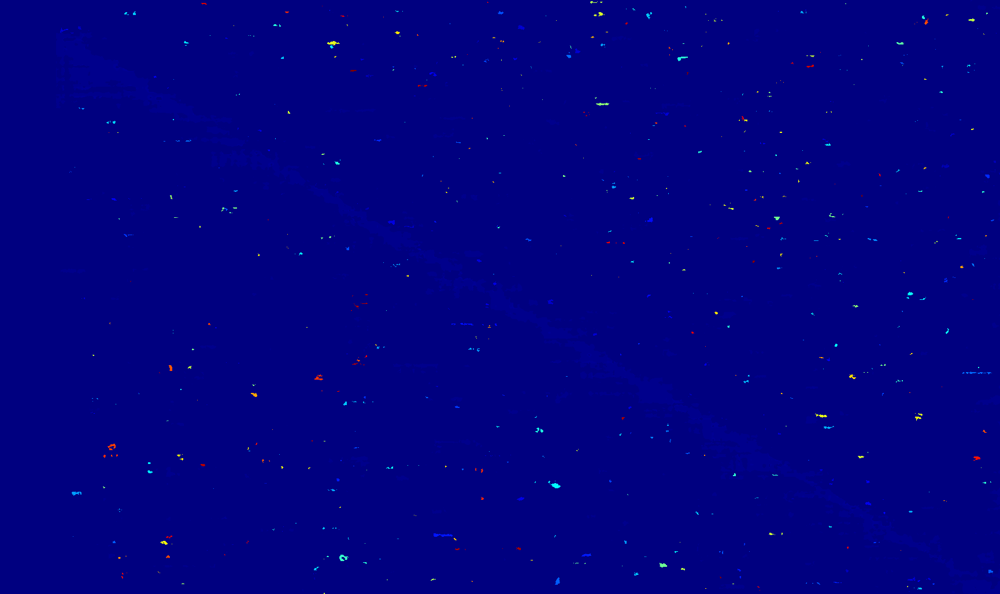

System Architecture

Input Layer
Stereo camera system with calibrated parameters
Processing Core
Modular pipeline with 6 processing stages
Output Layer
Volume measurements, 3D meshes, quality metrics
Results: Example 1 - Standard Pothole
Processing Metrics
| Disparity Range | 1.00 - 12.56 |
| Point Cloud Size | ~50,000 points |
| Ground Plane | ✓ Detected |
| Anomalies | 0 (filtered) |
Note: Demonstrates baseline pipeline performance with successful ground plane detection and preprocessing effectiveness.
Results: Example 2 - Large Anomaly

Volume Measurements
| Anomaly 1 | |
| Volume | 1.395 liters (1,395 cm³) |
| Method | Convex hull approximation |
| Anomaly 2 | |
| Volume | 223.867 liters (223,867 cm³) |
| Method | Alpha shape mesh |
Achievement: Successfully detected and measured volumes with multiple fallback methods ensuring robustness.
Edge Case Analysis
Edge Case 1: Night Time (Low Light)


Manipulation: 25% brightness, blue tint
Result: 1 anomaly detected, 0.012 liters
Success: Preprocessing handled low-light effectively
Edge Case 2: Night with Noise


Manipulation: 20% brightness + Gaussian noise (σ=15)
Result: 2 anomalies detected
Success: Bilateral filtering removed noise effectively
Edge Case 3: Extreme Shadows


Manipulation: Diagonal shadow (30% brightness)
Result: 16 anomalies detected
Success: Handled extreme lighting variations
Conclusion: Pipeline demonstrates robustness across challenging conditions including low-light, noise, and extreme shadows.